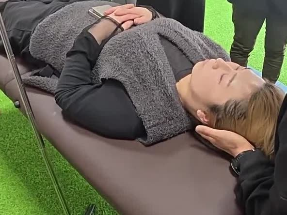
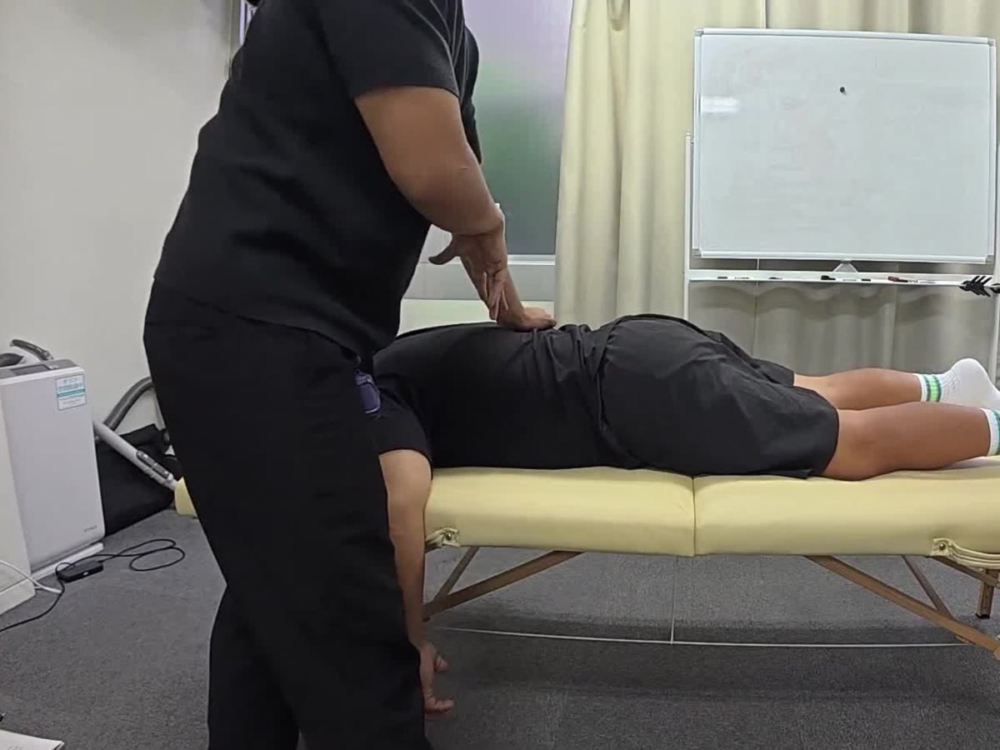
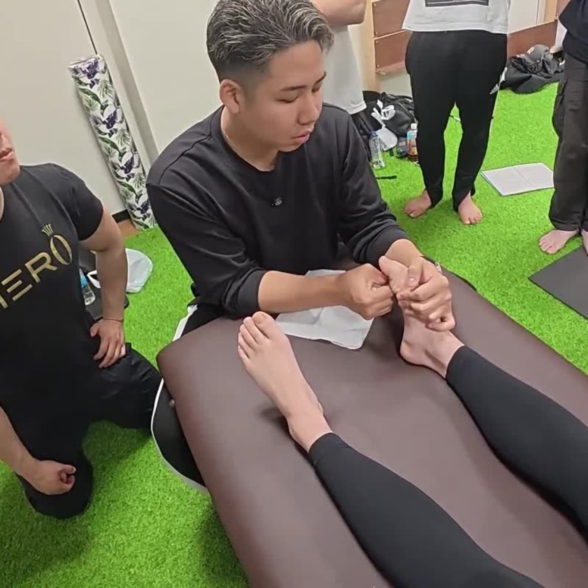
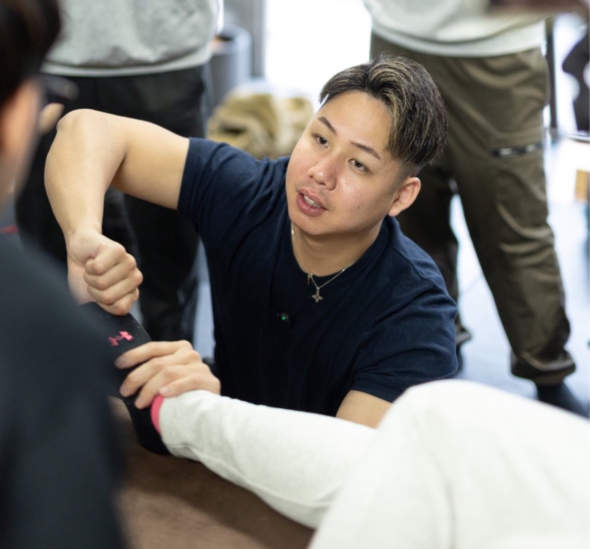
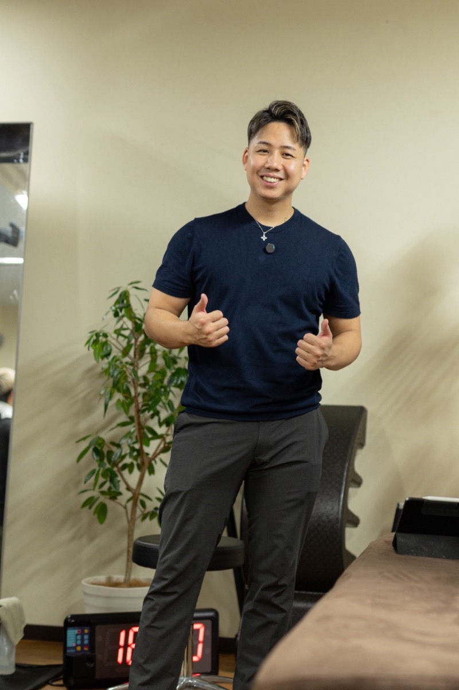

ヘッドケア
頭、顔まわり、首まわりを中心に、手でゆっくりケアしていきます。
相談例「画面を見る時間が長くて、頭まわりが重く感じる」
ヘッドケア・フットケア・ストレッチの体験会
ヘッドケア・フットケア・ストレッチの体験会
1日10名限定
通常 30分メニュー5,500円
体験価格 30分2,000円（税込）
体験会の期間限定価格です。参加の条件があります。
いろいろ試したけれど変わらなかった。どこに相談したらいいか分からなかった。そんな方にこそ、まっすぐ向き合います。

パソコンやスマートフォンを見る時間が長く、気づくと肩に力が入っている。
立ち仕事や歩いた日、座りっぱなしの日。足の疲れが残りやすい。
どこが、とはっきり言えないけれど、すっきりしない日が続いている。
ヘッドケア、フットケア、ストレッチ。どれが自分に合うのか迷ってしまう。
どれか一つでも、はっきりしなくても大丈夫です。まずは今の状態を聞かせてください。
決まったコースに当てはめるのではなく、その日の状態とご希望から内容を考えます。
気になっているところ、最近の過ごし方、お仕事や家でのこと。話しやすいことからで大丈夫です。
身体の動かしやすさや、触れられて心地よい強さ、今日どう過ごしたいかを一緒に確かめます。
ヘッドケア・フットケア・ストレッチなどから、その日の内容をご提案し、納得いただいてから始めます。
実際の内容や時間は、当日の状態とご希望を伺ってから決めます。

頭、顔まわり、首まわりを中心に、手でゆっくりケアしていきます。
相談例「画面を見る時間が長くて、頭まわりが重く感じる」

足裏から足元、ふくらはぎを中心に、やさしくケアします。
相談例「一日立っていて、足がだるい」

身体の硬さや動かしにくさを確認しながら、無理のない範囲でゆっくり伸ばしていきます。
相談例「激しい運動は不安だけど、少し身体を動かしたい」
ご相談の一例です。実際の内容は、当日の状態や30分という時間に合わせて決めます。
フットケアを中心に、必要に応じて軽いストレッチを組み合わせるなど。
ヘッドケアを中心に、首や肩まわりもあわせて見ていくなど。
ストレッチを中心に、気になるところを少しずつケアしていくなど。
公式LINE、またはInstagramのDMからご連絡ください。日程が決まりしだい、日時を調整します。内容は決めずに来ていただいて大丈夫です。
気になっていること、お仕事や生活の様子、ご希望、苦手なことなどを伺います。
30分の中で、その日のケアの内容をご提案し、納得いただいてから始めます。強さや進め方は途中でもお伝えください。
担当者とのツーショット写真を撮らせてください。お顔を出したくない方は、掲載時にモザイクを入れます。
スマートフォンでアンケートにご回答いただき、Instagramで担当者のアカウントをメンションして投稿してください。無理な勧誘や継続契約は行いません。

パーソナルトレーナー／整体師／コンディショニング講師
12年以上、パーソナルトレーニングや整体、コンディショニングの現場で、一人ひとりの身体と向き合ってきました。最初から方法を一つに決めず、今の状態とご希望を伺ってから、その日に合う内容を一緒に考えます。
体験価格2,000円（税込・お一人30分）
通常の30分メニュー（ヘッド・フット・ストレッチ）は各5,500円
| メニュー | 時間 | 料金 |
|---|---|---|
| ケア体験（30分） | 30分 | 2,000円 |
体験会は、今後のご案内づくりにご協力いただける方に向けた特別価格です。お申し込みの前に、次の内容をご確認ください。
お顔を出したくない方は、モザイクを入れて掲載します。掲載方法とお名前の表記は、アンケートで選べます。
掲載前に内容を確認したい場合や、同意を取り消したい場合は、公式LINEでご連絡ください。
はい、大丈夫です。お話を伺ってから、その日の内容を一緒に決めます。
はい。写真の撮影にはご協力いただきますが、掲載時にお顔へモザイクを入れることができます。掲載方法とお名前の表記は、アンケートで選べます。
今後のホームページ（LP）やSNSで、施術の様子やお客様の声としてご紹介します。掲載前に確認したい場合や、同意を取り消したい場合は、公式LINEでご連絡ください。
Tシャツやジャージなど、動きやすい服装でお越しいただくか、お持ちください。ジーンズなど硬い素材の服は避けていただくと安心です。お着替えのスペースはご用意しています。
強さはご希望に合わせて調整します。途中でも、遠慮なくお声がけください。
公式LINE、またはInstagramのDMで受け付けています。「体験会希望」とお送りください。1日10名限定のため、枠が埋まりしだい締め切ります。
恵比寿駅周辺のプライベートなレンタルスペースです。ご予約が確定しましたら、詳しい場所をご案内します。
当店は医療機関ではなく、診断や治療は行いません。痛みが強い、通院中などの場合は、医師にご相談ください。
1日10名限定の体験会です。メニューが決まっていなくても大丈夫です。参加の条件をご確認のうえ、お申し込みください。